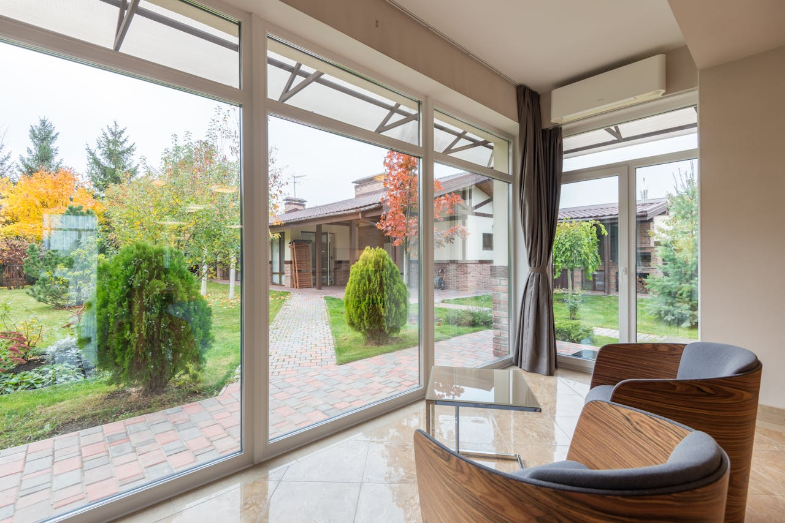

Nuestro Blog
Curiosidades de las Orquídeas
Escribe: Juan Dominguez
Las orquídeas, conocidas por su exquisita belleza y diversidad, son una de las familias más grandes de
plantas con flores en el mundo. Con más de 25,000 especies reconocidas y una amplia gama de colores, formas y
tamaños, las orquídeas son apreciadas tanto por los aficionados a la jardinería como por los botánicos
profesionales. Su fascinante historia, sus adaptaciones únicas y su papel en la cultura humana las convierten
en un tema de interés continuo para muchos.
Historia y Distribución
Las orquídeas tienen una historia que se remonta a millones de años atrás. Se cree que estas hermosas plantas
evolucionaron durante el período Cretácico, hace aproximadamente 76-84 millones de años. Su distribución se
extiende por todos los continentes, excepto la Antártida, y se pueden encontrar en una amplia variedad de
hábitats, desde los trópicos húmedos hasta los desiertos áridos y las altas montañas.
Las regiones tropicales del mundo, como América Central y del Sur, el sudeste asiático y África, albergan la
mayor diversidad de orquídeas. Sin embargo, estas plantas también se encuentran en climas más templados, como
Europa y América del Norte.
Adaptaciones y Estrategias de Supervivencia
Las orquídeas han desarrollado una serie de adaptaciones sorprendentes que les permiten prosperar en una
variedad de entornos y condiciones. Una de estas adaptaciones es la capacidad de algunas especies de orquídeas
para formar asociaciones simbióticas con hongos micorrícicos. Estos hongos proporcionan a las orquídeas
nutrientes adicionales, especialmente en suelos pobres, a cambio de carbohidratos producidos por las plantas a
través de la fotosíntesis.
Otra adaptación notable de las orquídeas es su diversidad de estrategias de polinización. Algunas especies de
orquídeas dependen de polinizadores específicos, como abejas, mariposas o aves, que son atraídos por la forma,
el color y el aroma de las flores. Otras orquídeas han desarrollado mecanismos de polinización más
especializados, como la producción de feromonas que imitan a las hembras de insectos para atraer a los machos.
Importancia Cultural y Económica
Las orquídeas han tenido una profunda influencia en la cultura humana a lo largo de la historia. En muchas
culturas, las orquídeas se asocian con la belleza, la elegancia y la sofisticación. Han sido objeto de
admiración y reverencia en la literatura, el arte y la mitología de todo el mundo.
Además de su importancia cultural, las orquídeas también tienen un gran valor económico. La horticultura de
orquídeas es una industria multimillonaria que abarca la producción y venta de plantas, flores y productos
relacionados en todo el mundo. Muchas especies de orquídeas se cultivan comercialmente como plantas
ornamentales, y algunas variedades, como la vainilla, tienen usos culinarios y medicinales.
Wikipedia - Orquideas

Los Beneficios de la Jardinería Urbana
Escribe: Almendra Rivera

La jardinería urbana es una actividad que ha ganado popularidad en las últimas décadas debido a sus numerosos
beneficios para las personas, las comunidades y el medio ambiente. A medida que más personas viven en entornos
urbanos densamente poblados, la jardinería urbana ofrece una manera de conectar con la naturaleza, mejorar la
calidad de vida y contribuir a la sostenibilidad ambiental. Aquí hay una mirada más profunda a algunos de los
beneficios clave de la jardinería urbana:
Mejora de la calidad del aire y reducción de la contaminación
Una de las principales ventajas de la jardinería urbana es su capacidad para mejorar la calidad del aire en
entornos urbanos. Las plantas absorben dióxido de carbono (CO2) durante la fotosíntesis y liberan oxígeno, lo
que ayuda a reducir los niveles de contaminantes atmosféricos y a mejorar la calidad del aire que respiramos.
Además, las áreas verdes urbanas actúan como sumideros de carbono, ayudando a mitigar los efectos del cambio
climático al absorber CO2 de la atmósfera.
Fomento de la biodiversidad y creación de hábitats para la vida silvestre
La jardinería urbana proporciona hábitats vitales para la vida silvestre en entornos urbanos altamente
desarrollados. Al plantar una variedad de plantas nativas y flores en jardines, parques y espacios verdes
urbanos, se crea un refugio para insectos, aves y otros animales. Estos espacios verdes también promueven la
biodiversidad al proporcionar un entorno propicio para una amplia gama de especies vegetales y animales.
Promoción de la salud mental y el bienestar
La jardinería urbana ofrece una forma efectiva de reducir el estrés, mejorar el estado de ánimo y promover el
bienestar mental. Pasar tiempo al aire libre en contacto con la naturaleza puede ayudar a aliviar la ansiedad
y la depresión, aumentar la autoestima y proporcionar una sensación de calma y serenidad. Además, participar
en actividades de jardinería, como plantar, regar y cuidar las plantas, puede ser terapéutico y gratificante
para muchas personas.
Fomento de la seguridad alimentaria y la soberanía alimentaria
La jardinería urbana desempeña un papel importante en la promoción de la seguridad alimentaria y la soberanía
alimentaria en entornos urbanos. Los huertos urbanos y los jardines comunitarios proporcionan acceso a
alimentos frescos, saludables y de temporada a personas que de otra manera podrían tener dificultades para
obtenerlos. Al cultivar sus propios alimentos, las personas pueden reducir su dependencia de los supermercados
y los alimentos procesados, promoviendo así una alimentación más saludable y sostenible.
Jardineria
Urbana - Tendencias y aplicaciones
¿Por qué tener un jardín en tu hogar?
Escribe: Javier Males

Tener un jardín en casa ofrece una serie de beneficios significativos para la salud y el bienestar. En primer
lugar, los jardines proporcionan un espacio tranquilo y relajante donde las personas pueden escapar del estrés
y la agitación de la vida cotidiana. El contacto con la naturaleza y el aire fresco pueden ayudar a reducir la
ansiedad, mejorar el estado de ánimo y promover la relajación.
Además, cultivar un jardín en casa brinda la oportunidad de practicar ejercicio físico ligero y mantenerse
activo al aire libre. Tareas como plantar, regar, podar y cosechar requieren movimiento y pueden contribuir a
una vida más saludable y activa.
Otro beneficio importante es la posibilidad de cultivar alimentos frescos y orgánicos en el hogar. Tener un
huerto en el jardín permite a las personas disfrutar de productos frescos y nutritivos directamente de la
planta, promoviendo una alimentación más saludable y sostenible.
Además, los jardines pueden mejorar la estética y el valor de una propiedad, creando un entorno atractivo y
acogedor para los residentes y visitantes. Ya sea disfrutando de la belleza de las flores, las fragancias de
las hierbas o la frescura de los vegetales, tener un jardín en casa es una experiencia gratificante que puede
enriquecer la vida de las personas de muchas maneras.
Articulo "Por qué debemos tener un Jardín en casa?"
El arte de la jardinería: Consejos para principiantes
Escribe: Eleonora Rivera
La jardinería es un arte que requiere conocimiento y paciencia. Para comenzar esta emocionante aventura, es fundamental conocer bien
el espacio donde deseas cultivar tus plantas y elegir aquellas que se adapten mejor a tu clima y entorno. Observa cuidadosamente
cuánta luz solar recibe cada área de tu jardín, qué tipo de suelo tienes y cómo es el drenaje en diferentes zonas.
Esta información te ayudará a planificar la distribución de tu jardín de manera efectiva y a seleccionar las plantas más adecuadas
para cada lugar.
Una vez que tengas claro qué plantas quieres cultivar, es importante preparar el suelo adecuadamente. Elimina las malas hierbas,
afloja la tierra y añade compost o abono orgánico para enriquecerla y proporcionar nutrientes a tus plantas. Este paso es
crucial para garantizar un buen crecimiento y desarrollo de tus cultivos.
Cuando llegue el momento de plantar, sigue las instrucciones específicas para cada tipo de planta. Asegúrate de cavar un agujero lo
suficientemente grande para acomodar las raíces y coloca la planta a la profundidad adecuada. Esto garantizará que tus plantas tengan
un buen comienzo y puedan establecerse correctamente en su nuevo hogar.
Es importante recordar que la jardinería es un proceso de aprendizaje continuo. No te desanimes si algunas plantas no prosperan o si
cometes errores en el camino. Toma nota de lo que funciona y lo que no, y utiliza esta información para mejorar en el futuro. Con el
tiempo, desarrollarás una comprensión más profunda de tu jardín y de las necesidades individuales de tus plantas, lo que te permitirá
disfrutar aún más de esta gratificante actividad. ¡Así que no esperes más y sumérgete en el maravilloso mundo de la jardinería!
Link a "15 consejos de jardinería para principiantes"
Terrarios: Mini jardines para espacios pequeños
Escribe: Matias Var
Explora el mundo encantador de los terrarios y descubre cómo puedes transformar incluso los espacios más pequeños en exuberantes
oasis verdes. Desde los materiales esenciales hasta los pasos detallados para su montaje, te guiaremos en el proceso de crear tu
propio mini jardín dentro de un terrario. Los terrarios no solo son una hermosa adición decorativa, sino también una manera ingeniosa
de llevar un pedacito de la naturaleza a tu hogar u oficina.
Antes de comenzar, asegúrate de tener todos los materiales necesarios. Esto incluye un recipiente transparente, como un frasco de
vidrio o una pecera, tierra para macetas, carbón activado, piedras pequeñas, musgo, y por supuesto, las plantas que deseas incluir
en tu terrario. Puedes elegir plantas pequeñas que se adapten al entorno cerrado de un terrario, como suculentas, helechos o plantas
de interior de crecimiento lento. Comienza colocando una capa de piedras pequeñas en el fondo del recipiente. Esto ayudará con el
drenaje del agua. Luego, agrega una capa delgada de carbón activado para evitar la acumulación de olores y hongos. Después, añade
una capa de tierra para macetas, nivelandola suavemente.
Ahora es el momento de colocar tus plantas en el terrario, jugando con diferentes alturas y texturas para crear un paisaje
visualmente interesante. Completa con una capa de musgo para mantener la humedad y dar un toque final natural. Una vez montado tu
terrario, es importante cuidarlo adecuadamente para mantenerlo saludable y vibrante.
Colócalo en un lugar con luz indirecta y evita la luz solar directa, que puede calentar demasiado el interior del terrario.
Riega con moderación, asegurándote de no saturar el suelo. Observa tus plantas regularmente y retira cualquier hoja marchita o
planta que esté muriendo para mantener el equilibrio dentro del terrario.
Link a "¿Qué es un terrario eterno? Cómo hacer uno casero paso a paso"
Plantas de interior: Cómo crear un ambiente verde en tu hogar
Escribe: Agustina Mose
En este artículo exploraremos el poder transformador de las plantas de interior y cómo pueden mejorar significativamente tu calidad
de vida al traer la naturaleza dentro de tu hogar. Desde las variedades que purifican el aire hasta las que añaden color y frescura,
te guiaremos a través de una selección de plantas ideales para espacios interiores. Además, te proporcionaremos consejos prácticos
sobre cómo cuidarlas para que prosperen en tu entorno.
Las plantas de interior no solo son hermosas, sino que también ofrecen una serie de beneficios para la salud y el bienestar. Ayudan a
purificar el aire, eliminando toxinas y aumentando los niveles de oxígeno en interiores. Además, pueden reducir el estrés, mejorar el
estado de ánimo y aumentar la productividad y la creatividad. Al integrarlas en tu hogar, creas un ambiente más saludable y armonioso
para ti y tu familia.
Existen muchas variedades de plantas de interior entre las cuales elegir, cada una con sus propias características y requisitos de
cuidado. Algunas de las más populares incluyen: Pothos (Epipremnum aureum), una planta resistente y de fácil cuidado, ideal para
principiantes; Espatifilo (Spathiphyllum), conocida por sus elegantes flores blancas y su capacidad para purificar el aire; cactus
y suculentas, perfectas para aquellos con poco tiempo o espacio, ya que requieren poco riego y cuidado; y helechos, que aportan una
sensación de exuberancia tropical y son excelentes para aumentar la humedad en interiores.
Para que tus plantas de interior prosperen, es importante proporcionarles el cuidado adecuado. Esto incluye: luz, colocándolas en
áreas con luz indirecta o filtrada y evitando la luz solar directa que puede quemar las hojas; agua, regandolas según sea necesario
y evitando tanto el riego excesivo como el insuficiente; suelo, utilizando tierra de buena calidad y asegurándote de que el
recipiente tenga un buen drenaje para evitar el encharcamiento; y nutrientes, alimentándolas ocasionalmente con un fertilizante
equilibrado para mantenerlas saludables y vigorosas.
Al integrar plantas de interior en tu hogar, no solo estás agregando belleza y frescura, sino que también estás creando un ambiente
más saludable y acogedor para ti y tus seres queridos.
¡Atrévete a llenar tu hogar de vida verde y disfruta de todos los beneficios que las plantas de interior tienen para ofrecer!
Link a "Cómo convertir tu casa en un oasis verde: qué plantas interior elegir según el estilo de vida y cuáles son sus beneficios"